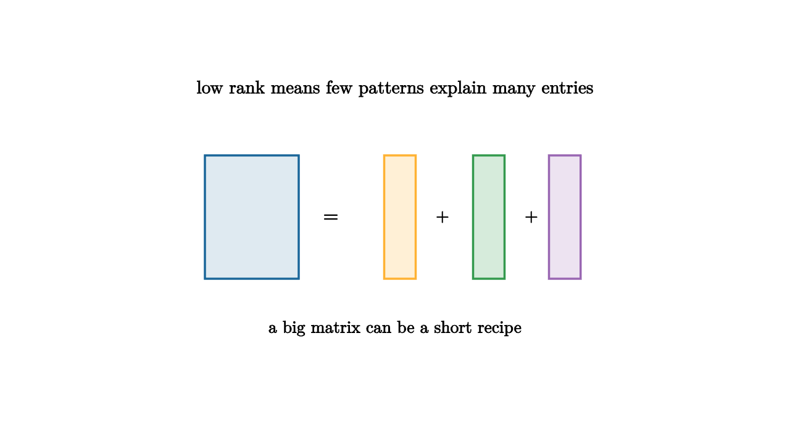

A city traffic camera records thousands of frames each morning. Most pixels barely change: the road stays in place, the lane markers stay in place, the horizon stays in place. Cars, shadows, and rain add variation, but the background is reused again and again. A table of measurements can have the same character. It may look enormous, while most of its columns move together because a few hidden causes are doing the work.
Low rank structure is the mathematical language for that situation. A matrix has low rank when its rows or columns can be assembled from a small number of basic patterns. Instead of storing every entry independently, we store reusable ingredients and mixing weights.

source
let soft = |col, amount| lerp(WHITE, col, amount)
mesh picture = [
center{1.35u} Text("low rank means few patterns explain many entries", 0.66),
center{1.45l + 0.05u} fill{soft(BLUE, 0.14)} stroke{BLUE, 2} Rect([0.95, 1.25]),
center{0.65l + 0.05u} Text("=", 0.72),
center{0.05r + 0.05u} fill{soft(ORANGE, 0.2)} stroke{ORANGE, 2} Rect([0.32, 1.25]),
center{0.48r + 0.05u} Text("+", 0.62),
center{0.95r + 0.05u} fill{soft(GREEN, 0.2)} stroke{GREEN, 2} Rect([0.32, 1.25]),
center{1.38r + 0.05u} Text("+", 0.62),
center{1.72r + 0.05u} fill{soft(PURPLE, 0.18)} stroke{PURPLE, 2} Rect([0.32, 1.25]),
center{1.08d} Text("a big matrix can be a short recipe", 0.62)
]The rank of a matrix is the dimension of the space spanned by its columns. If a data table has rank 3, every column is built from three independent column patterns. Real data is rarely exactly low rank, so we usually look for approximate low rank:
The singular value decomposition gives the best rank-$r$ approximation in the least-squares sense. Keeping the first $r$ singular values keeps the largest energy channels and discards the rest. The reconstruction error has a clean measurement:
This formula is useful because it turns compression into a visible choice. If the singular values fall sharply after the fifth value, five patterns carry most of the table. If they decay slowly, the table resists a short explanation.
source
let soft = |col, amount| lerp(WHITE, col, amount)
"Repeated Rows"
mesh scene = [
center{1.3u} Text("many rows may share the same ingredients", 0.62),
center{1.2l + 0.45u} fill{soft(BLUE, 0.16)} stroke{BLUE, 2} Rect([1.1, 0.18]),
center{1.2l + 0.15u} fill{soft(BLUE, 0.16)} stroke{BLUE, 2} Rect([1.1, 0.18]),
center{1.2l + 0.15d} fill{soft(BLUE, 0.16)} stroke{BLUE, 2} Rect([1.1, 0.18]),
center{1.2l + 0.45d} fill{soft(BLUE, 0.16)} stroke{BLUE, 2} Rect([1.1, 0.18]),
stroke{ORANGE, 3} Arrow(0.25l, 0.55r),
center{1.2r + 0.35u} fill{soft(ORANGE, 0.2)} stroke{ORANGE, 2} Rect([0.38, 0.9]),
center{1.2r + 0.35d} fill{soft(GREEN, 0.2)} stroke{GREEN, 2} Rect([0.38, 0.9])
]
play Fade(0.8)
"Rank Choice"
scene = [
center{1.3u} Text("choose r where the singular values bend", 0.62),
stroke{LIGHT_GRAY, 1} Line(1.55l + 0.8d, 1.55l + 0.8u),
stroke{LIGHT_GRAY, 1} Line(1.55l + 0.8d, 1.65r + 0.8d),
fill{ORANGE} center{1.2l + 0.45u} Rect([0.16, 0.95]),
fill{ORANGE} center{0.78l + 0.15u} Rect([0.16, 0.55]),
fill{ORANGE} center{0.36l + 0.0u} Rect([0.16, 0.25]),
fill{GREEN} center{0.06r + 0.62d} Rect([0.16, 0.16]),
fill{GREEN} center{0.48r + 0.67d} Rect([0.16, 0.06]),
stroke{RED, 3} Arrow(0.18l + 0.85d, 0.18l + 0.25d)
]
play Trans(0.9)
"Residual"
scene = [
center{1.3u} Text("the leftover should match the story", 0.62),
center{0.85l} fill{soft(BLUE, 0.14)} stroke{BLUE, 2} Rect([1.0, 1.0]),
center{0r} Text("-", 0.7),
center{0.85r} fill{soft(ORANGE, 0.18)} stroke{ORANGE, 2} Rect([1.0, 1.0]),
center{1.12d} Tex("A - A_r", 0.72)
]
play Trans(0.8)Low rank models appear in image compression, recommendation systems, survey analysis, sensor arrays, genomics, and economics. The setting changes, but the question stays steady: how many independent directions are genuinely needed to explain the observations?
The answer depends on the purpose. A streaming service may use a low-rank matrix to discover taste dimensions: people who like slow dramas, people who like bright comedies, people who like dense science fiction. An engineer may use a low-rank approximation to remove camera background and leave moving objects in the residual. A scientist may use it to separate dominant environmental trends from small local effects.
The main danger is to confuse compression with understanding. A rank-2 reconstruction can look smooth and convincing while hiding a rare signal. Low rank structure is a strong teacher because it forces a comparison between a short story and the data it leaves behind. The model says, "These few patterns explain most of what I see." The residual answers, "Here is what your story missed."